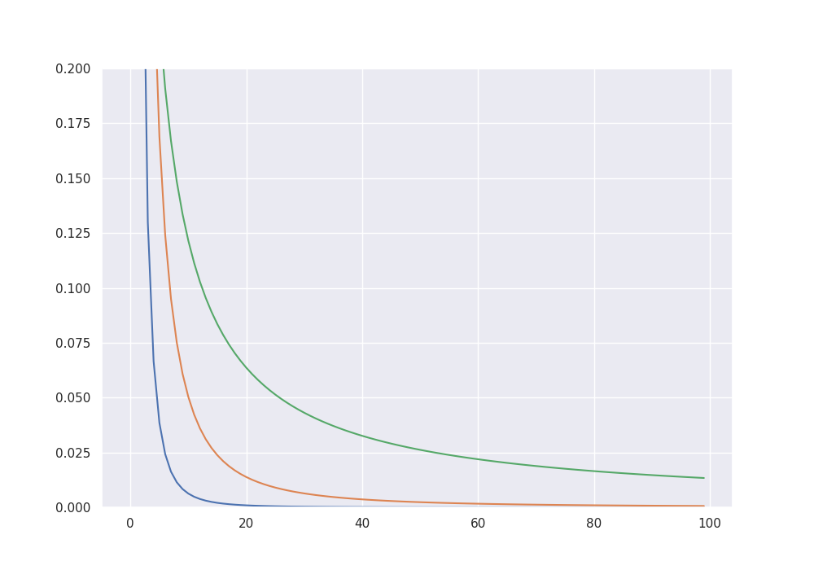
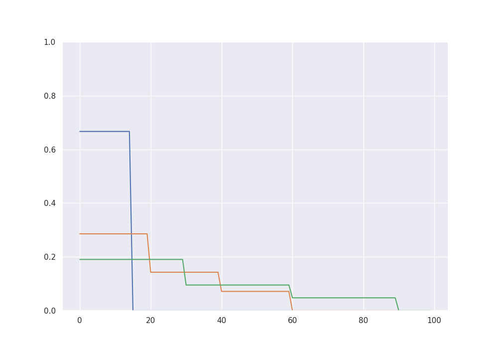

Note
Go to the end to download the full example code.
Methods of the L2-boost class#
We illustrate the available methods of the L2-boost class via a small example.
import numpy as np
import matplotlib.pyplot as plt
import seaborn as sns
import EarlyStopping as es
np.random.seed(42)
sns.set_theme()
Generating synthetic data#
To simulate some data we consider the signals from Stankewitz (2022).
sample_size = 1000
para_size = 1000
# Gamma-sparse signals
beta_3 = 1 / (1 + np.arange(para_size))**3
beta_3 = 10 * beta_3 / np.sum(np.abs(beta_3))
beta_2 = 1 / (1 + np.arange(para_size))**2
beta_2 = 10 * beta_2 / np.sum(np.abs(beta_2))
beta_1 = 1 / (1 + np.arange(para_size))
beta_1 = 10 * beta_1 / np.sum(np.abs(beta_1))
# S-sparse signals
beta_15 = np.zeros(para_size)
beta_15[0:15] = 1
beta_15 = 10 * beta_15 / np.sum(np.abs(beta_15))
beta_60 = np.zeros(para_size)
beta_60[0:20] = 1
beta_60[20:40] = 0.5
beta_60[40:60] = 0.25
beta_60 = 10 * beta_60 / np.sum(np.abs(beta_60))
beta_90 = np.zeros(para_size)
beta_90[0:30] = 1
beta_90[30:60] = 0.5
beta_90[60:90] = 0.25
beta_90 = 10 * beta_90 / np.sum(np.abs(beta_90))
fig = plt.figure(figsize = (10,7))
plt.ylim(0, 0.2)
plt.plot(beta_3[0:100])
plt.plot(beta_2[0:100])
plt.plot(beta_1[0:100])
plt.show()
fig = plt.figure(figsize = (10,7))
plt.ylim(0, 1)
plt.plot(beta_15[0:100])
plt.plot(beta_60[0:100])
plt.plot(beta_90[0:100])
plt.show()
- 
- 
We simulate data from a high-dimensional linear model according to one of the signals.
cov = np.identity(para_size)
sigma = np.sqrt(1)
X = np.random.multivariate_normal(np.zeros(para_size), cov, sample_size)
f = X @ beta_90
eps = np.random.normal(0, sigma, sample_size)
Y = f + eps
Theoretical bias-variance decomposition#
By giving the true function f to the class, we can track the theoretical bias-variance decomposition and the balanced oracle.
alg = es.L2_boost(X, Y, f)
alg.boost_to_balanced_oracle()
print("The balanced oracle is given by", alg.iter, "with mse =", alg.mse[alg.iter])
alg.iterate(300 - alg.iter)
classical_oracle = np.argmin(alg.mse)
print("The classical oracle is given by", classical_oracle, "with mse =", alg.mse[classical_oracle])
fig = plt.figure(figsize = (10, 7))
plt.plot(alg.bias2)
plt.plot(alg.stoch_error)
plt.plot(alg.mse)
plt.ylim((0, 1.5))
plt.xlim((0, 300))
plt.show()
The balanced oracle is given by 61 with mse = 0.3426526965147324
The classical oracle is given by 43 with mse = 0.2663459962451052
Early stopping via the discrepancy principle#
The L2-boost class provides several data driven methods to choose a boosting iteration making the right tradeoff between bias and stochastic error. The first one is a stopping condition based on the discrepancy principle, which stops when the residuals become smaller than a critical value. Theoretically this critical value should be chosen as the noise level of the model, for which the class also provides a methods based on the scaled Lasso.
alg = es.L2_boost(X, Y, f)
noise_estimate = alg.get_noise_estimate()
alg.discrepancy_stop(crit = noise_estimate, max_iter = 200)
stopping_time = alg.iter
print("The discrepancy based early stopping time is given by", stopping_time, "with mse =", alg.mse[stopping_time])
The discrepancy based early stopping time is given by 21 with mse = 0.6393493710788302
Early stopping via residual ratios#
Another method is based on stopping when the ratio of consecutive residuals goes above a certain threshhold.
alg = es.L2_boost(X, Y, f)
alg.residual_ratio_stop(max_iter = 200, K = 1.2)
stopping_time = alg.iter
print("The residual ratio based early stopping time is given by", stopping_time, "with mse =", alg.mse[stopping_time])
alg = es.L2_boost(X, Y, f)
alg.residual_ratio_stop(max_iter = 200, K = 0.2)
stopping_time = alg.iter
print("The residual ratio based early stopping time is given by", stopping_time, "with mse =", alg.mse[stopping_time])
alg = es.L2_boost(X, Y, f)
alg.residual_ratio_stop(max_iter = 200, K = 0.1)
stopping_time = alg.iter
print("The residual ratio based early stopping time is given by", stopping_time, "with mse =", alg.mse[stopping_time])
The residual ratio based early stopping time is given by 1 with mse = 1.4016351176944504
The residual ratio based early stopping time is given by 62 with mse = 0.33489471279528665
The residual ratio based early stopping time is given by 198 with mse = 0.6373757286047705
Classical model selection via AIC#
The class also has a method to compute a high dimensional Akaike criterion over the boosting path up to the current iteration.
alg = es.L2_boost(X, Y, f)
alg.iterate(200)
aic_minimizer = alg.get_aic_iteration(K = 2)
print("The aic-minimizer over the whole path is given by", aic_minimizer, "with mse =", alg.mse[aic_minimizer])
The aic-minimizer over the whole path is given by 25 with mse = 0.5301639624185535
This can also be combined to a two-step procedure.
alg = es.L2_boost(X, Y, f)
noise_estimate = alg.get_noise_estimate(K = 0.5)
alg.discrepancy_stop(crit = noise_estimate, max_iter = 200)
print("The discrepancy based early stopping time is given by", alg.iter)
aic_minimizer = alg.get_aic_iteration(K = 2)
print("The two-step stopping time is given by", aic_minimizer)
The discrepancy based early stopping time is given by 47
The two-step stopping time is given by 25
Total running time of the script: (0 minutes 20.990 seconds)